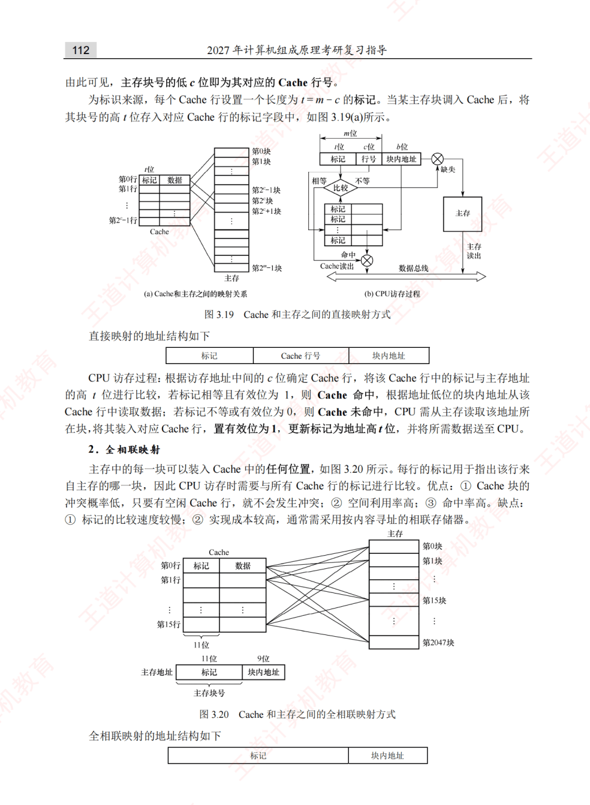
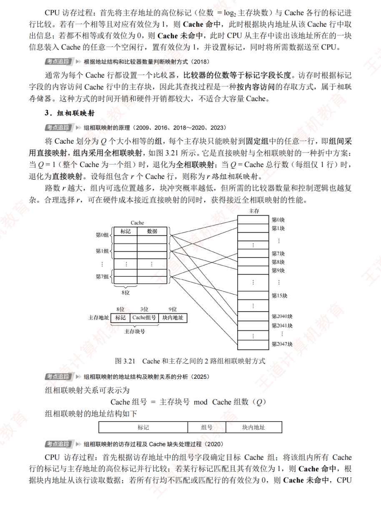
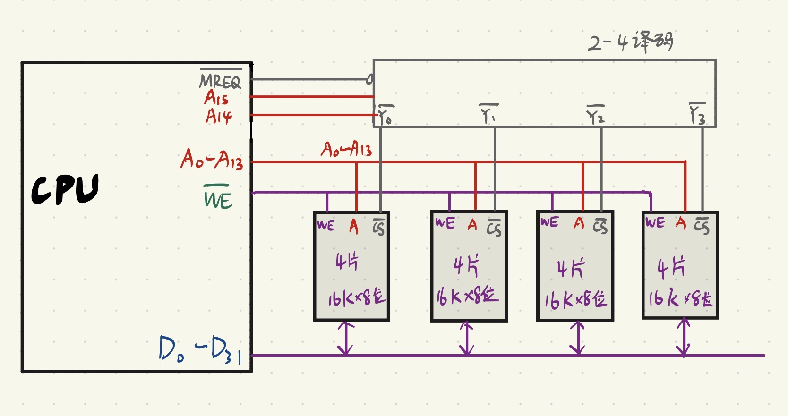
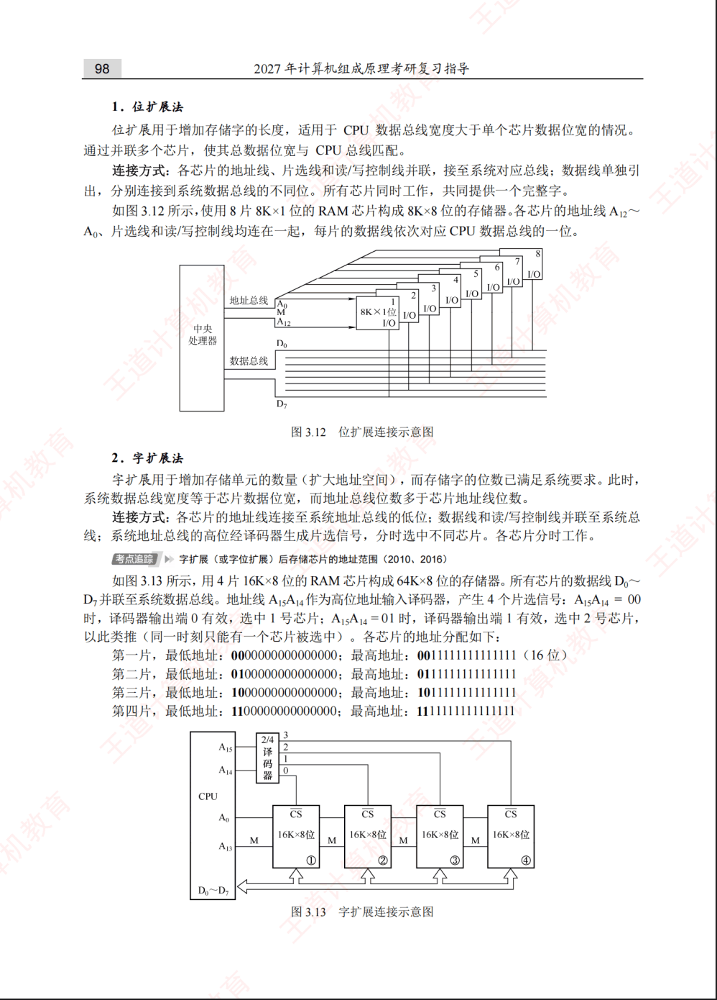
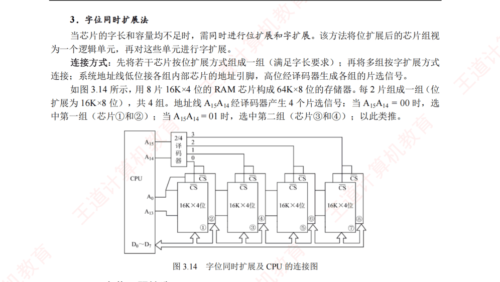

第3章：存储系统
第三章“存储系统”是《计算机组成原理》中承上启下、也是期末考试必考大题的绝对核心。如果说前两章是在研究 CPU 如何“算”，那么这一章就是研究数据如何“存”。
存储系统设计的核心矛盾是：容量大、速度快、成本低三者不可兼得。为了解决这个矛盾，现代计算机采用了多级存储体系（寄存器 \(\rightarrow\) Cache \(\rightarrow\) 主存 \(\rightarrow\) 辅存）：

核心知识点
1. 核心基础：主存技术指标与数据组织
-
📐 存储芯片容量与引脚数计算
\[\text{芯片存储容量} = 2^M \times N\text{ 位}\]- \(M\)：地址线根数（决定寻址单元总数 \(2^M\)）
- \(N\)：数据线根数（决定每个存储单元位宽）
- 例：\(64\text{K} \times 8\) 位芯片（\(64\text{K} = 2^{16}\)）需 16 根地址线 + 8 根数据线。
-
🧭 大端模式 vs 小端模式（高频选择）
按字节编址时，32 位机器数
0x12345678（最高字节 MSB 为12H，最低字节 LSB 为78H）从地址0x1000起存放如下：字节地址 0x1000（低）0x10010x10020x1003（高）记忆口诀 大端模式 12H34H56H78H高位字节放低地址（符合人类阅读顺序） 小端模式 78H56H34H12H低对低，高对高（常结合 C 结构体对齐考）
2. 必考对比：SRAM 与 DRAM（高频选择/填空）
半导体随机存取存储器（RAM）均为易失性存储器（断电丢失信息），但底层存储元截然不同：
| 对比维度 | SRAM（静态 RAM） | DRAM（动态 RAM） |
|---|---|---|
| 存储元器件 | 双稳态触发器（6 管锁存器） | 栅极电容上的电荷 |
| 读出性质 | 非破坏性读出（读后无需重写） | 破坏性读出（读出后必须重写再生） |
| 是否需要刷新 | 不需要（只要不断电即可保持） | 必须定时刷新（电容漏电，通常 \(2\text{ms}\) 内） |
| 送行列地址方式 | 行、列地址同时送入（地址线不复用） | 行、列地址分两次复用同一组引脚送入（地址线减半） |
| 存取速度 | 快 | 较慢 |
| 集成度与成本 | 集成度低、功耗大、价格昂贵 | 集成度高、功耗低、价格便宜 |
| 典型应用 | 高速缓冲存储器（Cache） | 计算机主存（内存条） |
DRAM 的“按行刷新”机制与三种刷新策略（必考计算）
DRAM 刷新由硬件独立按行进行（刷新一行耗时约等于 1 个存取周期 \(T\)）。设芯片矩阵共有 \(L\) 行，最大刷新周期为 \(T_{\text{ref}}\)（常为 \(2\text{ms}\)）：
| 刷新策略 | 时间安排方式 | 刷新总开销 / 间隔 | 死时间（死区）与优缺点 |
|---|---|---|---|
| 1. 集中刷新 | 在 \(T_{\text{ref}}\) 末尾集中连续刷新全部 \(L\) 行 | 连续占用 \(L \times T\) | 死区时间 \(= L \times T\)（死时间率 \(\dfrac{L \cdot T}{T_{\text{ref}}}\)）；正常读写快，但死区内 CPU 无法访存 |
| 2. 分散刷新 | 把每个存储周期一分为二：前 \(T\) 读写，后 \(T\) 刷 1 行 | 等效周期拉长为 \(2T\) | 无死区；但每隔 \(2L \cdot T\) 就刷完一遍，过度刷新使系统整体速度降低一半 |
| 3. 异步刷新 | 将 \(L\) 行均匀分散到 \(T_{\text{ref}}\) 内刷新 | 相邻刷新间隔 \(\Delta t = \dfrac{T_{\text{ref}}}{L}\) | 单次仅暂停 1 个周期 \(T\)（死区缩短为 \(T\)），常安排在指令译码阶段刷新，效率最高 |
【例 4-1-49】16K×16 位存储器的芯片数与刷新计算
题目：
有一个 \(16\text{K} \times 16\) 位的存储器，由多个 \(1\text{K} \times 4\) 位的 DRAM 芯片构成（芯片内是 \(64 \times 64\) 结构），回答以下问题：
(1) 总共需要多少片 RAM？
(2) 若采用异步刷新方式，如果单元刷新间隔不超过 \(2\text{ms}\)，则刷新周期（相邻两次刷新间隔）是多少？
(3) 若采用集中刷新方式，存储器刷新一遍最少需要多少个刷新周期？设存储器的读写周期为 \(0.5\mu\text{s}\)，死区占多少时间？死时间率为多少？
查看答案与解析
解析：
(1) 所需 DRAM 芯片数 \(= \dfrac{16\text{K} \times 16}{1\text{K} \times 4} = 16 \times 4 = 64\text{ 片}\)。
(2) 采用异步刷新方式，需在 \(2\text{ms}\) 内分散把芯片的 \(64\) 行刷新一遍，故刷新时间间隔 \(= \dfrac{2\text{ms}}{64} = 31.25\mu\text{s}\)（约 \(31\mu\text{s}\)）。
(3) 采用集中刷新方式，刷新一遍最少需要 \(64\) 个刷新周期（每个周期 \(T = 0.5\mu\text{s}\)）：
【例 4-1-50】16K×1 位 DRAM 的刷新周期与刷新时间计算
题目：
某 \(16\text{K} \times 1\) 位的 DRAM 存储芯片的读/写周期 \(T_m = 0.1\mu\text{s}\)，设芯片的最大刷新间隔不允许超过 \(2\text{ms}\)（\(1\text{ms} = 10^3\mu\text{s}\)），否则有可能丢失信息。回答以下问题：
(1) 单行刷新周期是多少？将 DRAM 存储芯片刷新一遍需要多少个刷新周期？
(2) 若将刷新平均分散在 \(2\text{ms}\) 内（异步分散），则刷新信号周期是多少？
(3) 若采用集中刷新方式，则将 DRAM 芯片刷新一遍需要多少时间？不能提供读写服务的百分比是多少？
查看答案与解析
解析：
(1) 按该教材定义，刷新操作等于一次读操作加一次写回操作，故单行刷新周期 \(= 2 \times T_m = 2 \times 0.1\mu\text{s} = 0.2\mu\text{s}\)。
\(16\text{K} \times 1\) 位芯片共有 \(14\) 根地址线（\(2^{14} = 16\text{K}\)），按行、列数相同计算，片内共有 \(2^7 = 128\) 行，因此刷新一遍共需 \(128\) 个刷新周期。
(2) 在 \(2\text{ms}\) 内把 \(128\) 行均匀刷新一遍，刷新信号周期为：
(3) 集中刷新方式下，全部存储单元刷新一遍所需时间（即死区时间）与死时间率为：
3. 常考对比：ROM 的分类与特点
ROM（只读存储器）的核心特征是非易失性（断电不丢数据），常用于存放固件与 BIOS 引导程序：
| ROM 类型 | 写入与可改写性 | 擦除方式与粒度 | 特点与典型应用 |
|---|---|---|---|
| 掩膜 ROM（Mask ROM） | 出厂生产时一次性固化，不可修改 | 不可擦除 | 大批量生产成本极低、可靠性高，适合定型产品固件 |
| PROM（可编程 ROM） | 用户用编程器一次性烧录 | 不可擦除（仅写一次） | 适合小批量定制，写错即报废 |
| EPROM | 可多次擦除重写（次数有限） | 紫外线照射整片擦除 | 必须从电路板上拆下芯片照射擦除，操作不便 |
| EEPROM | 可在线电信号多次擦写 | 电信号按字节擦写 | 无需拆下芯片，灵活性高，但容量较小、成本较高 |
| Flash Memory（闪存） | 快速在线多次电擦写 | 电信号按块（扇区）擦写 | 集成度高、擦写快，广泛用于 U 盘、SSD、现代 BIOS |
演进速记链条：掩膜 ROM（出厂固化） \(\rightarrow\) PROM（用户写一次） \(\rightarrow\) EPROM（紫外线整片擦） \(\rightarrow\) EEPROM（电信号按字节擦） \(\rightarrow\) Flash（电信号按块擦，最快）。
4. 必考设计题：存储器容量的扩展
当单片存储芯片的字数或位宽不够时，需通过多片组合构成目标主存，连线规则总结如下表：
| 扩展方式 | 扩展目的与示例 | 地址线接法 | 数据线接法 | 片选线（\(\overline{\text{CS}}\)）与读写线 |
|---|---|---|---|---|
| 位扩展 | 增加存储字长（如 2 片 \(1\text{K}\times 4\) 位 \(\rightarrow 1\text{K}\times 8\) 位） | 地址线全部并联 | 分开连接数据总线不同位（如 \(D_7\sim D_4\) 与 \(D_3\sim D_0\)） | 片选线 \(\overline{\text{CS}}\) 并联，读写线并联 |
| 字扩展 | 增加存储字数（如 2 片 \(1\text{K}\times 8\) 位 \(\rightarrow 2\text{K}\times 8\) 位） | 低位片内地址线并联 | 数据线对应位全部并联 | 高位地址线经译码器（如 74LS138）分别接各芯片 \(\overline{\text{CS}}\) |
| 字位同时扩展 | 同时增加字数与位数（排成 \(M\text{ 行} \times N\text{ 列}\) 芯片阵列） | 低位地址并联入片内 | 同列芯片数据线并联（各列接不同数据位） | 同行芯片 \(\overline{\text{CS}}\) 并联；不同行由高位地址译码轮流选中 |
5. 性能优化：多模块交叉存储器
为缓解“CPU 快、主存慢”的速度鸿沟，采用 \(m\) 个独立主存模块并行组织（设单模块存取周期为 \(T\)，总线传送周期为 \(\tau\)）：
| 编址方式 | 地址划分结构 | 连续地址分布规律 | 并行性与核心用途 |
|---|---|---|---|
| 高位交叉编址（顺序方式） | 高位：体号 + 低位：体内地址 |
连续地址集中在同一个模块内 | 访问连续数据块时仍是串行（耗时 \(nT\)），仅用于单纯扩充容量与故障隔离 |
| 低位交叉编址（轮流方式） | 高位：体内地址 + 低位：体号 |
连续地址轮流分散在相邻不同模块中 | 满足交叉存取度 \(T = m\tau\) 时可实现 流水线式不间断并行读写 |
四体低位交叉存储器（\(m=4,\ T=4\tau\)）连续读取 \(n\) 个字的流水线重叠示意：
| 模块 \ 时间节拍 | \(\tau_1\) | \(\tau_2\) | \(\tau_3\) | \(\tau_4\) | \(\tau_5\) | \(\tau_6\) | \(\tau_7\) |
|---|---|---|---|---|---|---|---|
| 体 \(M_0\)（地址 \(0, 4\dots\)） | 启动读字 0 | 存取中 | 存取中 | 送出字 0 | 启动读字 4 | \(\cdots\) | |
| 体 \(M_1\)（地址 \(1, 5\dots\)） | 启动读字 1 | 存取中 | 存取中 | 送出字 1 | \(\cdots\) | ||
| 体 \(M_2\)（地址 \(2, 6\dots\)） | 启动读字 2 | 存取中 | 存取中 | 送出字 2 | |||
| 体 \(M_3\)（地址 \(3, 7\dots\)） | 启动读字 3 | 存取中 | 存取中 | 送出字 3 |
由此直接看出低位交叉连续读取 \(n\) 个字的总耗时核心公式：
6. 绝对核心压轴大题：Cache（高速缓冲存储器）
（1）理论基础与性能指标计算
- 局部性原理：包含空间局部性（程序倾向于访问刚访问过的数据的邻近位置，如顺序执行指令、按行遍历数组）和时间局部性（程序倾向于在不久的将来再次访问同一数据或指令，如循环体、累加变量）。
- 命中率与平均访问时间：增加 Cache 的目的，是在性能上使主存的平均读出时间尽可能接近 Cache 的读出时间。设程序执行期间 Cache 完成存取 \(N_c\) 次，主存完成存取 \(N_m\) 次，命中时 Cache 访问时间为 \(t_c\)，未命中时主存访问时间为 \(t_m\)，主存慢于 Cache 的倍率为 \(r = \dfrac{t_m}{t_c}\)，则：
结论：为提高访问效率 \(e\)，命中率 \(h\) 越接近 \(1\) 越好，\(r\) 值以 \(5 \sim 10\) 为宜；命中率 \(h\) 与程序行为、Cache 容量、组织方式及块大小密切相关。（注：若题目说明采用“先查 Cache，未命中再访问主存”的串行访存方式，则 \(t_a = h \cdot t_c + (1 - h)(t_c + t_m) = t_c + (1 - h)t_m\)。）
（2）主存与 Cache 的三种地址映射方式
由于 Cache 行数远少于主存块数，需要为每个 Cache 行设置一个标记位（Tag）记录其存放的主存块编号，并设置 1 位有效位（Valid bit）指示该行数据是否有效（写回法还需 1 位脏位 Dirty bit）。三种映射方式对比如下：
| 映射方式 | 映射规则 | 主存地址划分（从高到低） | 比较器数量与硬件开销 | 块冲突概率与空间利用率 |
|---|---|---|---|---|
| 1. 直接映射 | 主存块只能装入 Cache 唯一指定行： \(\text{Cache 行号} = \text{主存块号} \bmod \text{Cache 总行数}\) |
标记 (Tag) + Cache 行号 (Index) + 块内地址 (Offset) |
仅需 1 个比较器，实现最简单、判断最快 | 冲突概率最高，空间利用率最低，无须替换算法 |
| 2. 全相联映射 | 主存块可装入 Cache 任意空闲行 | 主存块号/标记 (Tag) + 块内地址 (Offset) |
需与所有行并行比较，相联存储器成本最高、最慢 | 冲突概率最低，空间利用率与命中率最高 |
| 3. 组相联映射 | 组间直接映射，组内全相联（每组 \(r\) 行称为 \(r\) 路组相联）： \(\text{Cache 组号} = \text{主存块号} \bmod \text{Cache 总组数 } Q\) |
标记 (Tag) + 组号 (Set) + 块内地址 (Offset) |
\(r\) 路组相联需 \(r\) 个比较器，硬件与性能折中 | 随路数 \(r\) 增大，冲突减少，最常用于现代 CPU |
展开查看教材原图：直接映射、全相联映射与 2 路组相联映射示意图（图 3.19 ~ 3.21）


交互图解：冲突、落点与 LRU
Cache 有空行，不等于当前主存块能放进去。直接映射限制“只能放哪一行”；组相联限制“只能进哪一组”，但允许在组内选一行。下面固定为 4 行 Cache、初始全空，输入是主存块号，不是字节地址。2 路组相联在组内采用 LRU（最近最少使用）替换。
静态示例：访问 0、4、0、4、1、5、1、5。直接映射时行号 = 块号 mod 4，0 与 4 争用行 0，1 与 5 争用行 1，8 次访问全未命中。2 路组相联有 2 组，组号 = 块号 mod 2；0 与 4 可同时留在组 0，1 与 5 可同时留在组 1，因此命中 4 次。
把规则变成计算
4 行直接映射：块 4 → 组/行 0，Tag = 1。2 路、2 组：块 4 → 组 0，Tag = 2。图中每行显示 V、Tag 和块号；V 是有效位。块号是帮助读图的标记，真实 Cache 数据区存储的是整块数据。
再切到“同组放入三个块”：虽然整个 Cache 有 4 行，块 0、4、8 都只能进 2 路 Cache 的组 0，组内仍然放不下。这说明相联度能缓解某些冲突，不会消除所有未命中。这些命中率只对应所示访问序列，不是通用性能结论。
规则核对：CS 61C 组相联 Cache 课程笔记。
（3）三种映射方式手写笔记与经典例题
直接映射相当于把主存地址的“低位（Cache 行号 + 块内地址）”直接对应到 Cache 中，高位作为标记（Tag）。
【直接映射·例 1】
某 32 位计算机的 Cache 容量为 \(16\text{KB}\)，Cache 块大小为 \(16\text{B}\)，若主存与 Cache 地址映射采用直接映射方式，则主存地址 0x1234E8F8 的单元装入 Cache 的地址是多少？
查看答案与解析
解析： Cache 容量 \(= 16\text{KB} = 2^{14}\text{B}\)，按字节编址需要 \(14\) 根地址线。将主存十六进制地址展开为二进制，只取低 14 位作为 Cache 地址：
答案： 装入 Cache 的 14 位地址是 10 1000 1111 1000。
【直接映射·例 2】
设有一个主存-Cache 层次的存储器，其主存容量为 \(1\text{MB}\)，Cache 容量为 \(16\text{KB}\)，每字块有 8 个字，每字 32 位，采用直接映射方式。若主存地址为 35301H，且 CPU 访问 Cache 命中，设 Cache 起始字块编号为 0，则该主存块在 Cache 的第几个字块中？
查看答案与解析
解析：
- 计算各字段位数：主存容量 \(1\text{MB} = 2^{20}\text{B}\)（主存地址 20 位）；每字块 8 个字 \(= 8 \times 32\text{ bit} = 32\text{B} = 2^5\text{B}\)（低 5 位块内地址）；Cache 容量 \(16\text{KB} = 2^{14}\text{B}\)（Cache 地址 14 位，其中高 \(14-5=9\) 位为 Cache 块号）。
-
拆分主存地址
(35301)H：\[(35301)_{\text{H}} = \underbrace{0011\ 01}_{\text{标记 (6位)}}\ \underbrace{01\ 0011\ 000}_{\text{Cache 块号 (9位)}}\ \underbrace{0\ 0001}_{\text{块内地址 (5位)}}\] -
计算十进制块号：\((010011000)_2 = 2^7 + 2^4 + 2^3 = 128 + 16 + 8 = 152\)。
答案： 在 Cache 的第 152 个字块中。
在全相联映射下，主存中的任意一块可以装入 Cache 中的任意一块。设主存地址总长为 \(n\) 位，块内地址占 \(b\) 位，则主存字块号（即标记 Tag）占 \(n - b\) 位，通过相联存储器（按内容寻址）与所有 Cache 行的标记同时比较。
【全相联映射·例题】
若主存为 \(1\text{MB}\)，Cache 为 \(2\text{KB}\)，按 \(256\text{B}\) 分块。回答下列问题：
(1) 若 Cache-主存层次采用全相联映射，则主存、Cache 各分多少块？并写出主存与 Cache 的地址格式。
(2) 若由相联存储器实现主存-Cache 地址变换，问该相联存储器应包含几个单元，每单元几位？
(3) 若 Cache 读写周期为 \(25\text{ns}\)，主存读写周期为 \(250\text{ns}\)，平均命中率为 \(98\%\)，求平均访问时间 \(t_a\)。
查看答案与解析
解析：
(1) 每块大小为 \(256\text{B} = 2^8\text{B}\)，故块内地址占 8 位：
| 地址类型 | 高位字段 | 低位字段（块内地址） |
|---|---|---|
| 主存地址格式（共 20 位） | 主存块号 / 标记（12 位） | 块内地址（8 位） |
| Cache 地址格式（共 11 位） | Cache 块号（3 位） | 块内地址（8 位） |
(2) 相联存储器单元数与 Cache 块数一一对应，包含 8 个单元；每单元与主存块号比较，含 12 位（计入 1 位有效位则为 13 位）。
(3) 平均访问时间 \(t_a = 0.98 \times 25\text{ns} + (1 - 0.98) \times 250\text{ns} = 24.5\text{ns} + 5\text{ns} = \mathbf{29.5\text{ns}}\)。
设主存地址为 \(n\) 位，组号占 \(q\) 位（总组数 \(Q = 2^q\)），块内地址占 \(b\) 位，高位标记占 \(t = n - q - b\) 位。主存第 \(j\) 块映射到 Cache 组号 \(i = j \bmod Q\)。
【组相联映射·例 1】
某计算机的 Cache 共有 16 块，采用 2 路组相联映射方式（每组 2 块）。每个主存块大小为 32 字节，按字节编址。主存 129 号单元所在主存块装入到 Cache 的组号是多少？
查看答案与解析
解析： 129 号字节单元位于主存第 \(j = \lfloor 129 / 32 \rfloor = 4\) 块（从 0 编号）；Cache 共 \(Q = 16 / 2 = 8\) 组；装入组号 \(i = 4 \bmod 8 = \mathbf{4}\)。
【组相联映射·例 2】
设有一个主存-Cache 层次的存储器，Cache 的容量为 64 块，采用组相联映射方法，字块大小为 128 个字，每 4 块为 1 组。若主存容量为 4096 块，采用字编址，则主存地址和主存标记的位数分别是多少？
查看答案与解析
解析： 按字编址，主存容量 \(= 4096 \times 128 = 2^{12} \times 2^7 = 2^{19}\text{ 字}\)（19 位）；Cache 组数 \(= 64 / 4 = 16 = 2^4\)（组号 4 位）；块内地址 \(128 = 2^7\)（7 位）；标记位数 \(= 19 - 4 - 7 = \mathbf{8\text{ 位}}\)。
| 主存标记 (Tag) | 组号 (Set) | 块内地址 (Offset) |
|---|---|---|
| 8 位 | 4 位 | 7 位 |
（4）替换算法、写策略与 Cache 总容量计算
- 常用替换算法：当 Cache 行（或组）已满时，常考 LRU（近期最少使用法，命中率最高）、FIFO（先进先出法）、LFU（最不经常使用法） 和 随机算法（RAND）。
- 两种写一致性策略对比：
| 写策略 | 写命中时操作 | 是否需要脏位（Dirty bit） | 优缺点与特点 |
|---|---|---|---|
| 全写法（Write-Through，写直达） | 同时写入 Cache 和主存 | 否（\(0\) 位） | 数据强一致、实现简单；频繁写主存拖慢速度（常配写缓冲队列） |
| 写回法（Write-Back） | 只修改 Cache，置该行 脏位 = 1；仅被替换出 Cache 时才写回主存 |
是（需 \(1\) 位脏位） | 大幅减少访存次数、速度快；存在短暂不一致风险 |
必考审题陷阱：Cache 数据容量 vs Cache 物理总容量
题目问 “Cache 数据容量” 时只算数据块部分；问 “Cache 总容量” 时必须加上每行的标记位与控制位！
7. 拓展：虚拟存储器与 TLB 快表
虚拟存储器是“主存—辅存”层次的核心技术，将程序员编写的虚拟地址（逻辑地址）由硬件 MMU 配合操作系统维护的页表/段表自动转换为物理地址（实地址）：
| 虚存组织方式 | 划分依据与块长 | 主要优点 | 主要缺点与开销 |
|---|---|---|---|
| 页式虚拟存储器 | 固定大小的页（Page） | 页长固定、管理简单、无外部碎片 | 最末一页存在页内碎片；页表本身可能很大 |
| 段式虚拟存储器 | 按程序逻辑模块分段（Segment），段长可变 | 逻辑独立，极便于模块化编译、共享与保护 | 段长不一，易产生段间外部碎片 |
| 段页式虚拟存储器 | 先按逻辑分段，段内再固定分页 | 兼具段式的逻辑共享保护与页式的紧凑物理分配 | 地址变换需查段表 + 查页表两次，访存开销大 |
TLB（快表）与 Cache 协同访存流程
由于页表存放在主存中，无快表时读写一次数据需访问 2 次主存（先查页表、再取数据）。CPU 内部增设 TLB（Translation Lookaside Buffer，页表项高速缓存） 后，完整地址变换与数据读取流程如下：
flowchart LR
VA["CPU 给出虚拟地址<br/>(虚页号 + 页内偏移)"] --> TLB{"查快表 TLB<br/>是否命中?"}
TLB -->|"命中 (无需访存查表)"| PA["拼接物理页框号 + 偏移<br/>得到物理地址 PA"]
TLB -->|"未命中"| PT["访问主存慢表(页表)<br/>并更新 TLB"]
PT -->|"缺页则调入主存"| PA
PA --> CACHE{"查 Cache<br/>是否命中?"}
CACHE -->|"命中"| CPU["直接送回 CPU"]
CACHE -->|"未命中"| MEM["访问主存读数据块<br/>装入 Cache 并送 CPU"]8. 其他补充（从其他教材整理的笔记）
（1）主存储器的地址寄存器（MAR）和数据寄存器（MDR）
在主存储器接口中，地址寄存器（MAR）用来存放当前 CPU 要访问（读或写）的主存单元地址；数据寄存器（MDR）用来暂存从主存中读出的信息，或准备写入主存的信息。
（2）字节地址空间（Byte Address Space）
字节地址空间就是 CPU 能够直接寻址和访问的、以“字节（Byte）”为最小独立单位的内存地址范围。
- 为什么要“按字节寻址”？
如果把内存比作一栋巨大的公寓楼，字节地址空间就是这栋楼的房间号系统。内存里最小的物理存储位是 bit（0或1），但按位寻址过于繁琐，因此计算机规定每 8 个 bit 组成 1 个字节（Byte），每个字节分配一个专属门牌号（内存地址），称为按字节寻址（Byte-addressable）。 -
空间大小由什么决定？
地址空间的大小取决于 CPU 的地址总线宽度 \(n\)。若有 \(n\) 根地址线，就能产生 \(2^n\) 个不同的地址组合，每个地址对应 \(1\text{ Byte}\)：\[\text{字节地址空间大小} = 2^n \times 1\text{ Byte}\] -
经典实例：32 位字节地址空间 + 64 位数据线
- 最大寻址空间：\(2^{32} \times 1\text{B} = 4\text{GB}\)，地址范围从
0x00000000到0xFFFFFFFF。 - 单次访存位宽：64 位数据线每次访存可同时并行传输 8 个字节（64 位）。
- 硬件地址拆分：高 29 位（\(A_{31} \sim A_3\)）用于选中哪一个 64 位的“数据行”，低 3 位（\(A_2 \sim A_0\)）决定这 8 个字节中的哪几个字节生效。因此 8 字节数据对象的起始地址最好是 8 的整数倍（低 3 位为
000），否则跨行存放需要访存 2 次——这也是 C/C++ 编译器自动做边界对齐的硬件原因。
课堂与课后习题
练习 1（PPT）：C 结构体边界对齐与小端存储
题目：
在按字节编址、采用小端方式的 32 位计算机中，按边界对齐方式，对以下 C 语言结构型变量 a 分配存储空间：
若 a 的首地址为 2020 FE00H，a 的成员变量 x2 的机器数为 1234 0000H，则其中 34H 所在存储单元的地址是多少？
A. 2020FE03H
B. 2020FE04H
C. 2020FE05H
D. 2020FE06H
查看答案与解析
答案：D
解析（手写解题步骤整理）：
- 考点梳理：
- 边界对齐原则：为了让 CPU 读写效率最高，数据成员的起始地址必须是自身类型大小的整数倍。
- 小端方式（Little-endian）：数据的低位字节存放在内存的低地址端，高位字节存放在高地址端（口诀：低对低，高对高）。
- 第 1 步：计算结构体的内存对齐
short x1占 2 字节，int x2占 4 字节，结构体a的首地址为2020 FE00H。- 故
x1先占用首地址2020 FE00H与2020 FE01H。 x2为int类型（4 字节），根据边界对齐原则，其起始地址必须能被 4 整除（2020 FE02H和2020 FE03H留空填充），故x2占用2020 FE04H~2020 FE07H这 4 个字节。- 第 2 步：按小端方式摆放机器数
x2的机器数为12 34 00 00 H（每 2 位十六进制数 \(= 1\text{ Byte} = 8\text{ bit}\)），从高位字节到低位字节依次为12H、34H、00H、00H。- 按小端方式（低位字节放低地址）依次存放如下表：
| 内存地址 | 2020 FE00H |
2020 FE01H |
2020 FE02H |
2020 FE03H |
2020 FE04H |
2020 FE05H |
2020 FE06H |
2020 FE07H |
|---|---|---|---|---|---|---|---|---|
| 存放数据 | x1 低字节 |
x1 高字节 |
空（对齐） | 空（对齐） | 00H |
00H |
34H |
12H |
练习 2（PPT）：存储芯片引脚数与按半字寻址
题目 1：
某存储器芯片，其存储容量为 \(64\text{K} \times 8\) 位，该芯片的地址线和数据线的数目分别是多少？
查看答案与解析
答案：16 根地址线、8 根数据线
解析：
因为 \(64\text{K} = 2^{16}\)，寻址 \(2^{16}\) 个单元需要 16 根地址线；每个单元位宽为 8 位，故需要 8 根数据线。
题目 2：
某计算机字长 32 位，容量 \(4\text{MB}\)，若按半字编址，寻址范围是多少？
查看答案与解析
答案：2M（即 \(2 \times 2^{20}\) 个地址单元）
解析：
- 概念区分：
- 容量（以字节为单位）：存储器物理上总共能装多少个 Byte（\(1\text{B} = 8\text{ bit}\)）。
- 编址方式：按字节编址每 \(1\text{B}\) 分配一个地址；按半字编址每半个字分配一个地址；按字编址每个字分配一个地址。
- 分步计算：
- 计算机字长 \(= 32\text{ bit} = 4\text{B}\)，故半字大小 \(= \dfrac{4\text{B}}{2} = 2\text{B}\)。
- 总容量 \(= 4\text{MB} = 4 \times 2^{20}\text{B}\)。
- 寻址范围（地址单元总数）为：
作业 P122-1：存储器容量与芯片扩展计算
题目：
设有一个具有 20 位地址和 32 位字长的存储器，问：
(1) 该存储器能存储多少字节的信息？
(2) 如果存储器由 \(512\text{K} \times 8\) 位 SRAM 芯片组成，需要多少片？
(3) 需要多少位地址作芯片选择？
查看答案与解析
解析：
- (1) 求存储器总字节容量：
地址线 20 位，说明有 \(2^{20} = 1\text{M}\) 个存储单元；每个单元字长 \(32\text{ bit} = 4\text{B}\)，故总容量 \(= 1\text{M} \times 4\text{B} = \mathbf{4\text{MB}}\)。 - (2) 求所需 \(512\text{K} \times 8\) 位芯片片数：
目标规格为 \(1\text{M} \times 32\) 位，单片规格为 \(512\text{K} \times 8\) 位： - 位扩展（列数）：\(32 / 8 = 4\) 列；
- 字扩展（行数）：\(1\text{M} / 512\text{K} = 1024\text{K} / 512\text{K} = 2\) 行；
- 构成 \(2 \times 4\) 的芯片阵列，总片数 \(= 2 \times 4 = \mathbf{8\text{ 片}}\)。
- (3) 求片选地址位数：
单片容量 \(512\text{K} = 2^{19}\)，片内寻址需要 19 位地址线（\(A_{18} \sim A_0\)）。剩余高位地址线数量 \(= 20 - 19 = \mathbf{1\text{ 位}}\)（即最高位 \(A_{19}\)），可产生 2 个片选信号分别选中 2 行芯片。
答案： (1) \(4\text{MB}\)；(2) \(8\) 片；(3) \(1\) 位地址作片选。
作业 P122-3：16K×8 位芯片扩展为 64K×32 位存储器
题目：
用 \(16\text{K} \times 8\) 位的 DRAM 芯片构成 \(64\text{K} \times 32\) 位存储器，请画出该存储器的组成逻辑框图。
查看答案与解析
解析：
1. 芯片总数与阵列规划
- 目标容量：\(64\text{K} \times 32\text{ 位}\)；单片容量：\(16\text{K} \times 8\text{ 位}\)。
- 字扩展（行数）：\(64\text{K} / 16\text{K} = 4\text{ 行}\)（4 组芯片轮流工作）。
- 位扩展（列数）：\(32 / 8 = 4\text{ 列}\)（每组 4 片芯片拼成 32 位字长）。
- 总片数：\(4 \times 4 = 16\text{ 片}\)。
2. 地址线、数据线与控制线分配
- 地址线（共 16 位 \(A_{15} \sim A_0\)，因 \(64\text{K} = 2^{16}\)）：
- 片内地址线（14 位）：单片 \(16\text{K} = 2^{14}\)，低 14 位 \(A_{13} \sim A_0\) 并行连接到所有 16 片芯片的地址端。
- 片选地址线（2 位）：高 2 位 \(A_{15}, A_{14}\) 接 2-4 译码器（以访存控制信号 \(\overline{\text{MREQ}}\) 作为译码器使能端），译码器输出的 4 个片选信号 \(\overline{Y_0} \sim \overline{Y_3}\) 分别横向接第 1~4 行芯片的片选端 \(\overline{\text{CS}}\)。
- 数据线（共 32 位 \(D_{31} \sim D_0\)）：按列并联，每行的 4 片芯片分别连接 \(D_7 \sim D_0\)、\(D_{15} \sim D_8\)、\(D_{23} \sim D_{16}\)、\(D_{31} \sim D_{24}\)。
- 读写控制线（\(\overline{\text{WE}}\)）：同时并联到所有 16 片芯片的读写控制端。

补充参考：王道教材存储器位扩展、字扩展与字位同时扩展连接图（图 3.12 ~ 3.14）
借鉴王道计算机考研资料（如需电子版可联系我）：


作业 P122-8：顺序存储器与交叉存储器带宽计算
题目：
设存储器容量为 \(64\text{MB}\)，字长为 64 位，模块数 \(m = 8\)，分别用顺序和交叉方式进行组织。存储周期 \(T = 100\text{ns}\)，数据总线宽度为 64 位，总线传送周期 \(\tau = 50\text{ns}\)。求：顺序存储器和交叉存储器的带宽各是多少？
查看答案与解析
解析：
1. 基本单位统一
- 字长 \(= 64\text{ bit} = 8\text{B}\)；存储周期 \(T = 100\text{ns} = 10^{-7}\text{s}\)；总线传送周期 \(\tau = 50\text{ns} = 0.5 \times 10^{-7}\text{s}\)；模块数 \(m = 8\)。
2. 顺序存储器（高位交叉）带宽
各模块串行工作，每隔一个完整的存储周期 \(T = 100\text{ns}\) 只能读写一个字（\(8\text{B}\)）：
3. 交叉存储器（低位交叉）最大极限带宽
各模块流水线并行工作，满足 \(T \le m\tau\)。在流水线完全充满的极限状态下，每隔一个总线传送周期 \(\tau = 50\text{ns}\) 即可输出一个字（\(8\text{B}\)）：
重点辨析：极限最大带宽 vs 连续读出 \(n=8\) 个字的实际数据传输率
老师给的标准答案以 \(\text{bit}\) 为单位（顺序 \(640\text{Mbps}\)、交叉 \(1280\text{Mbps}\)），与上面的 \(80\text{MB/s}\)、\(160\text{MB/s}\) 物理意义完全一致（\(1\text{B} = 8\text{bit}\)）。
但要注意 408 考研常考的变体问法——如果题目明确限定 “若连续读出 8 个字，求顺序存储器和交叉存储器的数据传输率各是多少？”，就必须计入流水线第一个字的建立时间 \(T\)：
- 顺序存储器（读 8 个字）：耗时 \(t_{\text{顺序}} = 8T = 800\text{ns}\)，实际传输率 \(= \dfrac{64\text{B}}{800\text{ns}} = \mathbf{80\text{MB/s}}\)（与极限带宽相同）。
- 交叉存储器（读 8 个字）：耗时 \(t_{\text{交叉}} = T + (8 - 1)\tau = 100\text{ns} + 7 \times 50\text{ns} = 450\text{ns}\)，实际传输率为：
避坑总结：只要题目出现 “连续读出 \(n\) 个字”，交叉存储器分母必须用 \(T + (n-1)\tau\)；只有未限定字数、单纯问“交叉存储器的最大带宽”时，才直接用极限公式 \(\dfrac{\text{字长}}{\tau}\)。
作业 P122-9：Cache 平均访问时间与系统效率
题目：
CPU 执行一段程序时，Cache 完成存取的次数为 \(2420\) 次，主存完成存取的次数为 \(80\) 次，已知 Cache 存储周期为 \(40\text{ns}\)，主存存储周期为 \(240\text{ns}\)，求 Cache/主存系统的效率和平均访问时间。
查看答案与解析
解析：
-
计算 Cache 命中率 \(H\)：
\[N = N_c + N_m = 2420 + 80 = 2500\text{ 次}, \qquad H = \frac{N_c}{N} = \frac{2420}{2500} = 0.968\] -
计算平均访问时间 \(T_a\)（已知 \(T_c = 40\text{ns}\)，\(T_m = 240\text{ns}\)）：
\[T_a = H \times T_c + (1 - H) \times T_m = 0.968 \times 40\text{ns} + 0.032 \times 240\text{ns} = 38.72\text{ns} + 7.68\text{ns} = \mathbf{46.4\text{ns}}\] -
计算 Cache/主存系统的访问效率 \(e\)：
\[e = \frac{T_c}{T_a} \times 100\% = \frac{40\text{ns}}{46.4\text{ns}} \times 100\% \approx \mathbf{86.2\%}\]
答案： 平均访问时间为 \(46.4\text{ns}\)，系统效率约为 \(86.2\%\)。
作业 P123-10：由平均访问时间反推 Cache 命中率
题目：
已知 Cache 存储周期 \(40\text{ns}\)，主存存储周期 \(200\text{ns}\)，Cache/主存系统平均访问时间为 \(50\text{ns}\)，求 Cache 的命中率是多少？
查看答案与解析
解析：
将已知条件 \(T_c = 40\text{ns}\)、\(T_m = 200\text{ns}\)、\(T_a = 50\text{ns}\) 代入平均访问时间公式 \(T_a = H \times T_c + (1 - H) \times T_m\)：
答案： Cache 的命中率是 \(93.75\%\)（或 \(\dfrac{15}{16}\)）。
作业 P123-13：组相联 Cache 内存地址格式划分
题目：
一个组相联 Cache 由 64 个行组成，每组 4 行。主存储器包含 \(4\text{K}\) 个块，每块 128 字。请表示内存地址的格式。
查看答案与解析
解析：
按字编址下，组相联映射地址从高到低分为 主存字块标记 (Tag) + 组索引 (Index) + 块内字地址 (Offset) 三部分：
- 块内地址（Offset）：每块有 \(128 = 2^7\) 字 \(\implies\) 块内地址占 7 位。
- 组索引（Index）：Cache 共 64 行，每组 4 行，总组数 \(= \dfrac{64}{4} = 16 = 2^4\) 组 \(\implies\) 组索引占 4 位。
- 主存字块标记（Tag）：主存共 \(4\text{K} = 2^{12}\) 块（主存块号共 12 位），故 \(\text{Tag 位数} = 12 - 4 = \mathbf{8\text{ 位}}\)；系统总地址长度为 \(8 + 4 + 7 = 19\) 位。
| 主存字块标记 (Tag) | 组索引 (Index) | 块内地址 (Offset) |
|---|---|---|
| 8 位（\(A_{18} \sim A_{11}\)） | 4 位（\(A_{10} \sim A_7\)） | 7 位（\(A_6 \sim A_0\)） |
答案： 内存地址总长 19 位，其中 Tag 占 8 位，组索引占 4 位，块内字地址占 7 位。
作业 P123-14：直接映射冲突地址构造
题目：
有一个处理机，主存容量 \(1\text{MB}\)，字长 \(1\text{B}\)，块大小 \(16\text{B}\)，Cache 容量 \(64\text{KB}\)。若 Cache 采用直接映射方式，请给出两个不同标记的内存地址，它们映射到同一个 Cache 行。
查看答案与解析
解析：
- 划分 20 位物理地址结构：
- 物理地址总位数：\(1\text{MB} = 2^{20}\text{B} \implies 20\text{ 位}\)；
- 块内地址（Offset）：\(16\text{B} = 2^4\text{B} \implies 4\text{ 位}\)（\(A_3 \sim A_0\)）；
- Cache 行号（Index）：\(\dfrac{64\text{KB}}{16\text{B}} = 4096 = 2^{12} \implies 12\text{ 位}\)（\(A_{15} \sim A_4\)）；
- 主存标记（Tag）：\(20 - 12 - 4 = 4\text{ 位}\)（\(A_{19} \sim A_{16}\)）。
- 构造冲突地址对：要使两个地址映射到同一个 Cache 行且标记不同，只需保持中间 12 位 Index 相同，改变高 4 位 Tag（例如均取第 0 行、第 0 字节）：
| 示例地址 | 4 位 Tag (\(A_{19}\sim A_{16}\)) | 12 位 Index (\(A_{15}\sim A_4\)) | 4 位 Offset (\(A_3\sim A_0\)) | 十六进制表示 |
|---|---|---|---|---|
| 地址 1 | 0000 |
0000 0000 0000 |
0000 |
00000H |
| 地址 2 | 0001 |
0000 0000 0000 |
0000 |
10000H |
答案： 例如 00000H 和 10000H（均映射到 Cache 第 0 行，但 Tag 分别为 0H 和 1H）。
作业 P123-15：按字编址下的直接映射参数与地址格式
题目：
假设主存容量 \(16\text{M} \times 32\) 位，Cache 容量 \(64\text{K} \times 32\) 位，主存与 Cache 之间以每块 \(4 \times 32\) 位大小传送数据，请确定直接映射方式的有关参数，并画出主存地址格式。
查看答案与解析
解析：
注意本题所有容量均以 ×32位（即 32 位字） 为单位，说明系统按字编址：
- 主存总地址位数：主存共 \(16\text{M} = 2^{24}\) 个字单元 \(\implies\) 总地址 24 位。
- 块内字地址（Offset）：每块含 \(4 = 2^2\) 个字 \(\implies\) 块内地址占 2 位。
- Cache 行号（Index）：Cache 共 \(\dfrac{64\text{K}}{4} = 16\text{K} = 2^{14}\) 行 \(\implies\) Cache 行号占 14 位。
- 主存标记（Tag）：\(24 - 14 - 2 = \mathbf{8\text{ 位}}\)。
| 主存字块标记 (Tag) | Cache 行号 (Index) | 块内地址 (Offset) |
|---|---|---|
| 8 位（\(A_{23} \sim A_{16}\)） | 14 位（\(A_{15} \sim A_2\)） | 2 位（\(A_1 \sim A_0\)） |
答案： 主存总地址 24 位，其中 Tag 占 8 位、Cache 行号占 14 位、块内字地址占 2 位。
作业 P123-21：页式虚拟存储与 TLB 有效访问时间（EAT）
题目：
设某系统采用页式虚拟存储管理，页表存放在主存中。
(1) 如果一次内存访问使用 \(50\text{ns}\)，访问一次主存数据需用多少时间？
(2) 如果增加 TLB，忽略查找 TLB 表项占用的时间，并且 \(75\%\) 的页表访问命中 TLB，内存的有效访问时间（EAT）是多少？
查看答案与解析
解析：
-
(1) 无 TLB 时的访存时间：
页表存放在主存中，CPU 每次按虚拟地址读写数据都必须访问 2 次主存（第 1 次查主存页表得到物理页号，第 2 次访问主存读写实际数据）：\[T_{\text{无 TLB}} = 50\text{ns} + 50\text{ns} = \mathbf{100\text{ns}}\] -
(2) 引入 TLB 后的有效访问时间（EAT）：
- TLB 命中（概率 \(75\%\)）：忽略查 TLB 时间（\(0\text{ns}\)），直接访问 1 次主存读数据，耗时 \(50\text{ns}\)；
- TLB 未命中（概率 \(25\%\)）：需先查主存页表（\(50\text{ns}\)）再访问主存数据（\(50\text{ns}\)），耗时 \(100\text{ns}\)；
-
加权平均得有效访问时间：
\[\text{EAT} = 0.75 \times 50\text{ns} + 0.25 \times 100\text{ns} = 37.5\text{ns} + 25\text{ns} = \mathbf{62.5\text{ns}}\]
答案： (1) 无 TLB 时需 \(100\text{ns}\)；(2) 引入 TLB 后有效访问时间为 \(62.5\text{ns}\)。
补充典型例题
补充题 1：Cache 地址划分与总容量计算（含有效位/脏位）
题目：
某计算机的主存容量为 \(256\text{KB}\)，Cache 容量为 \(2\text{KB}\)，每块大小为 \(64\text{B}\)。分别求直接映射和 2 路组相联映射下主存地址各字段的位数，并计算 Cache 总容量。
查看答案与解析
解析：
- 基本参数：主存容量 \(256\text{KB} = 2^{18}\text{B}\)（总地址 18 位）；块大小 \(64\text{B} = 2^6\text{B}\)（块内地址 6 位，每块数据 \(64 \times 8 = 512\) 位）；Cache 总行数 \(= \dfrac{2\text{KB}}{64\text{B}} = 32 = 2^5\) 行。
| 映射方式 | 主存地址划分（共 18 位） | Cache 总容量（全写法，含 1 位有效位） | Cache 总容量（写回法，再加 1 位脏位） |
|---|---|---|---|
| 直接映射 | Tag (7位) + Line (5位) + Word (6位) |
\(32 \times (7 + 1 + 512) = \mathbf{16640\text{ 位}}\) | \(32 \times (7 + 1 + 1 + 512) = \mathbf{16672\text{ 位}}\) |
| 2 路组相联 | Tag (8位) + Set (4位) + Word (6位) |
\(32 \times (8 + 1 + 512) = \mathbf{16672\text{ 位}}\) | \(32 \times (8 + 1 + 1 + 512) = \mathbf{16704\text{ 位}}\) |
补充题 2：同时访问 vs 先查 Cache 再访存的平均访问时间
题目：
某 Cache-主存系统中，Cache 存取周期为 \(20\text{ns}\)，主存存取周期为 \(200\text{ns}\)。设 Cache 命中率为 \(90\%\)，求平均访问时间和访问效率。
查看答案与解析
解析：
-
同时访问方式（默认公式）：
\[t_a = h \cdot t_c + (1 - h) t_m = 0.9 \times 20\text{ns} + 0.1 \times 200\text{ns} = 38\text{ns}, \qquad e = \frac{20}{38} \approx 52.6\%\] -
先查 Cache、未命中再访问主存方式：未命中时需耗时 \(t_c + t_m = 220\text{ns}\)，此时：
\[t_a = 0.9 \times 20\text{ns} + 0.1 \times (20 + 200)\text{ns} = 40\text{ns}, \qquad e = \frac{20}{40} = 50\%\]
补充题 3：LRU 替换算法命中率计算
题目：
某 Cache 采用 4 路组相联映射，某组中已有块号为 2, 8, 6, 4 的数据（按从最远到最近访问排序为：4, 6, 8, 2）。现在依次访问块号为 8, 2, 6, 8, 4 的数据，采用 LRU 替换算法，求命中率。
查看答案与解析
解析：
LRU 规则将最近访问的块移至队首（最近使用端），淘汰时移出队尾（最久未用端）：
| 访问步序 | 访问块号 | 是否命中 | 调整后队列（最近使用 \(\rightarrow\) 最久未用） |
|---|---|---|---|
| 初始 | — | — | 4, 6, 8, 2 |
| 1 | 8 |
命中 | 8, 4, 6, 2 |
| 2 | 2 |
命中 | 2, 8, 4, 6 |
| 3 | 6 |
命中 | 6, 2, 8, 4 |
| 4 | 8 |
命中 | 8, 6, 2, 4 |
| 5 | 4 |
命中 | 4, 8, 6, 2 |
答案： 5 次访问全部命中，命中率 \(= 5 / 5 = \mathbf{100\%}\)。
补充题 4：4 体低位交叉存储器连续读耗时与带宽
题目：
一个 4 体低位交叉存储器，每个模块的存取周期为 \(200\text{ns}\)，总线传送周期为 \(50\text{ns}\)。求连续读取 8 个字的时间和带宽。
查看答案与解析
解析：
- 验证流水线条件：\(m \times \tau = 4 \times 50\text{ns} = 200\text{ns} = T\)，满足 \(T = m\tau\)。
-
连续读取 8 个字的总时间：
\[t = T + (8 - 1)\tau = 200\text{ns} + 7 \times 50\text{ns} = \mathbf{550\text{ns}}\] -
实际带宽对比：
- 低位交叉带宽 \(= \dfrac{8\text{ 字}}{550\text{ns}} \approx \mathbf{1.45 \times 10^7\text{ 字/秒}}\)；
- 顺序方式需 \(8 \times 200\text{ns} = 1600\text{ns}\)，带宽仅 \(\dfrac{8\text{ 字}}{1600\text{ns}} = 5 \times 10^6\text{ 字/秒}\)（低位交叉约为顺序方式的 \(2.9\) 倍）。
补充题 5：DRAM 三种刷新方式的死时间对比
题目：
某 DRAM 芯片有 128 行，存取周期为 \(50\text{ns}\)，刷新周期为 \(2\text{ms}\)。分别计算集中刷新、分散刷新和异步刷新下的死时间与特点。
查看答案与解析
解析：
| 刷新方式 | 刷新安排方式 | 死时间（死区）计算 | 特点对比 |
|---|---|---|---|
| 集中刷新 | 在 \(2\text{ms}\) 末尾集中刷新 128 行 | \(128 \times 50\text{ns} = \mathbf{6400\text{ns}} = 6.4\mu\text{s}\) | 读写操作不受刷新干扰，但存在连续 \(6.4\mu\text{s}\) 死区 |
| 分散刷新 | 每个存储周期前半 \(50\text{ns}\) 读写，后半 \(50\text{ns}\) 刷新 | 无死区（\(0\text{ns}\)） | 系统等效存取周期翻倍为 \(100\text{ns}\)，过度刷新降低速度 |
| 异步刷新 | 每隔 \(2\text{ms} / 128 = 15.625\mu\text{s}\) 刷新 1 行 | 单次刷新耗时 \(\mathbf{50\text{ns}}\) | 兼顾两者优点，将死区分散为每次仅 \(50\text{ns}\) |